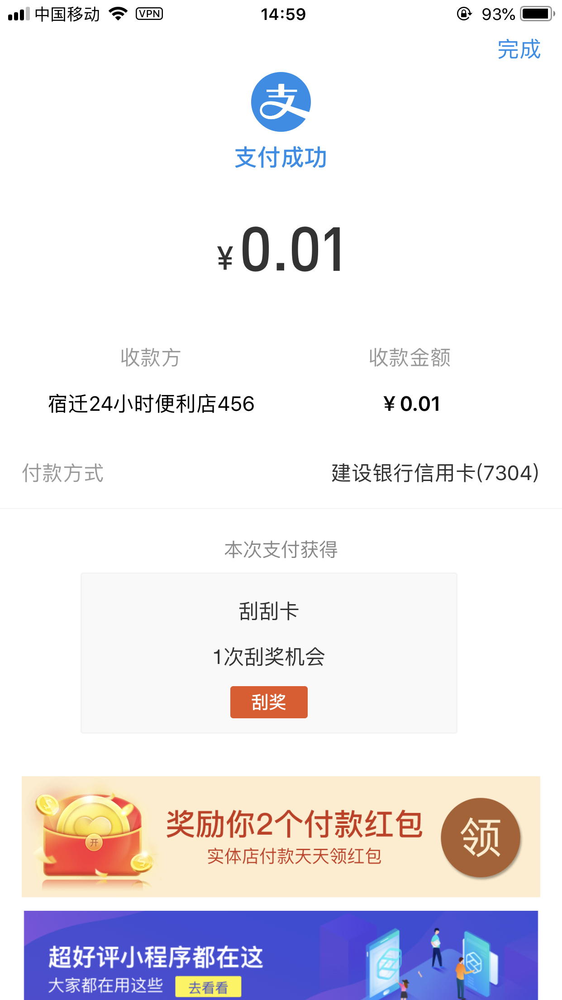

参与了聚合支付业务系统的开发，总结一下
技术栈
- 使用ansible发布代码和配置
- 使用kong作为前端网关
- 使用jenkins做自动化测试
- 使用sonarqube做代码规范检查
- 使用gogs做代码版本管理
- 开发githook系统作为git事件的订阅器，自动化git事件的处理，比如发送钉钉通知
- 开发自己的框架系统，对源码比较了解，方便持续开发
- 使用xxl-job做定时任务管理系统
- 使用graphite, statsd, grafana做监控可视化系统
- 使用阿里云日志平台做日志存储，以后对日志的数据分析
- 使用阿里云MaxCompute大数据处理系统
- 使用supervisor管理持久运行的进程
- 使用ssh tunnel转发内网端口，使用内网服务器，可以减少云服务器花费
- 使用airflow作为任务编排系统
- 使用terraform管理kong网关配置
- 使用consul作为服务注册中心
- 使用钉钉做异常报警
- 使用beanstalk做消息队列
- 订单表使用程序进行分库分表
- 使用ldap做开发系统的用户中心，集成jenkins、gogos、grafana等系统
- 使用gitlab的issue做用户反馈的问题管理系统
- 使用mkdocs作为文档管理系统
- 使用gitbook生成开发平台文档
- 开发yum的server存放和安装自定义的rpm包
其中githook系统可能比较有特色，一般不会单独开发hook系统
核心交互流程图如下：

商户系统
聚合支付系统的商户源自最上游支付通道的商户，比如微信支付的商户参考：
- https://pay.weixin.qq.com/index.php/core/home/login?return_url=%2F
- https://www.xunhuweb.com/blog/738
支付宝支付的商户参考：
支付配置系统
系统会接入多个聚合支付的服务提供商供商户选择，商户可以注册成多个聚合支付服务提供商的客户，然后在系统中选择一个提供商生成二维码
门店系统
一个商户下可能有多个门店，每个门店的收款码需要区分，这就允许一个商户下有多个收款二维码了，（可能根据门店数量收取开户费用）
一些注意的点
虽然微信、支付宝等具有子商户管理的功能，聚合支付平台会对这些商户做一个统一的管理，聚合支付平台也需要维护商家完整的商户记录
数据格式转换
聚合支付系统后端有多个支付提供商，每个支付提供商提供的接口都不统一，在聚合系统中需要对这些差异进行抽象封装，使得容易维护和扩展。
订单存储与透传
作为聚合支付商，订单需要往后端的支付渠道商传递，但是一般系统也会记录订单，供商户在后台进行查看
接口测试-民丰银行
发起支付分为主扫和被扫，主扫使用用户的openid调起支付，被扫使用用户的auth code调起支付，这里拿民丰银行的被扫举例如下
请求数据
curl -H 'Host: pay.zhunan.top' -H 'User-Agent: GuzzleHttp/6.3.3 curl/7.65.1 PHP/7.0.33' --data "REQ_PARAM=%7B%22cusid%22%3A%22402000058110696%22%2C%22device%22%3A%22100018363%22%2C%22device_type%22%3A%22001%22%2C%22device_id%22%3A%22990000862471854%22%2C%22trxamt%22%3A1%2C%22reqsn%22%3A%2200000000001%22%2C%22paytype%22%3A%22A04%22%2C%22randomstr%22%3A%225d3e97fccd90f%22%2C%22authcode%22%3A%22111111111111111111111111%22%2C%22appid%22%3A%2200016155%22%2C%22key%22%3A%22mlR0VmQztiGtqCGy%22%2C%22sign%22%3A%229BA2AD0C92DC110B758924BD1A04B6D6%22%7D" 'https://pay.zhunan.top/fusepay/webservice/apiweb/pay.scan'
curl -H 'Host: pay.zhunan.top' -H 'User-Agent: GuzzleHttp/6.3.3 curl/7.65.1 PHP/7.0.33' --data 'REQ_PARAM={"cusid":"402000058110696","device":"100018363","device_type":"001","device_id":"990000862471854","trxamt":1,"reqsn":"00000000001","paytype":"A04","randomstr":"5d3e97fccd90f","authcode":"111111111111111111111111","appid":"00016155","key":"mlR0VmQztiGtqCGy","sign":"9BA2AD0C92DC110B758924BD1A04B6D6"}' 'https://pay.zhunan.top/fusepay/webservice/apiweb/pay.scan'
扣款成功响应数据如下
{
"appid": "00016155",
"cusid": "402000058110696",
"fintime": "2019-07-29 14:53:51",
"randomstr": "l99cQXDF",
"reqsn": "00000000001",
"retcode": "SUCCESS",
"sign": "4B669B632CE4F3BE8812BA0AB8CEBB3B",
"trxstatus": "0000"
}
支付宝显示扣款成功

商业模型
聚合支付因为申请比较容易，竞争压力大，盈利一般有下面几种方式
- 作为第一级代理分取利润
- 收集数据进行挖掘后开发成产品
- 使用平台的微信支付公众号支付、用户支付后关注平台公众号，开发粉丝经济
产品推广
- 销售到店推广安装
- 大型连锁商场合作
一些注意的点
这个支付主要是获取用户的授权码(auth_code)，透传到最终的支付宝商户，这个商户对授权码对应的用户进行扣款
appid和key都需要参与sign计算
支付成功不能以下单成功为依据，比如手动去查询订单状态或者等待支付通道的回调过来，订单状态变成了支付成功为依据
支付系统涉及到资金的流转，在业务异常时，能够快速定位错误就非常重要了，核心调用尽量添加完整日志的记录，比如调用三方支付通道的支付接口时，通过日志记录下调用的详细信息
作为第四方支付平台，一般也会提供开放接口供调用，并且会提供详细的接口调用文档，或者支持多语言的调用（比如java、php）这个开发的支付接口
为了尽可能增加安全性，支付相关的接口一般都会添加签名、https协议等
代码结构的统一和数据格式的统一
专业术语“进件”，就是把商户录入到支付系统里，让商户使用支付平台的收款码进行收款。
机构就是代理，可以给在这个机构下入驻的商户定手续费率
参考资料
持续更新中...